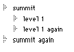

| TOP | UP: Data Manipulation | NEXT: Datafiles |
Non-scalars are datatypes that are editable in an internal Frontier edit window: tables, wptexts, outlines, scripts, and menubars. This chapter discusses the UserTalk verbs that edit non-scalars.
Even in UserTalk, a non-scalar is edited by way of its edit window. Only one window can be edited at any given moment; the object whose edit window is being edited is called the target. So the notion of the target is discussed first. Then the various verbs that operate within the target's edit window are enumerated.
Generally speaking, what you can do manually to a non-scalar in its edit window, you can do programmatically. But this isn't completely true; for instance, you can't perform multiple selections in an outline window programmatically. On the other hand, there are some valuable UserTalk edit window operations that no keyboard shortcut or menu item accesses (though of course you can always add one that does).
The object being edited may be either a database entry or a local variable. Beginners often don't realize this, because to open a database entry's edit window manually and edit it is common, whereas one never does the same to a local variable. Nevertheless, a local variable can be a non-scalar, and while it is in scope, its edit window can be opened and manipulated through UserTalk.
On editing non-scalars manually, see Chapter 2, Edit Windows. On edit windows as windows, see Chapter 24, Windows. On programmatic editing of the menu aspect of menubars (as opposed to the outline aspect covered in this chapter), see also Chapter 26, Menus and Suites. Pictures have an internal edit window too; see Chapter 28, Pictures. Database tables are a special case because their entries can also be accessed directly as objects; see Chapter 17, Objects.
UserTalk verbs that edit non-scalars operate in an edit window; but they don't take a parameter specifying what edit window to operate in. Instead, a non-scalar object must already be the target, and any verb that edits a non-scalar will automatically operate in the target's edit window. At any given moment, exactly one object is the target (or there might be no target).1 An object is the target because it is either of the following:
To learn the address of the target:
target.get ()
To declare an object explicitly the target, making its edit window visible and frontmost:
edit (addrObject)
To declare an object's parent table explicitly the target, making its edit window visible and frontmost:
table.gotoAddress (addrObject)
To declare an object explicitly the target, without making its edit window visible and frontmost:
target.set (addrObject)
The difference between edit() and window.open() is that window.open() doesn't change the target if there is already an explicitly declared target.
Both edit() and table.gotoAddress() accept either a non-scalar or a scalar as their object. A scalar cannot be the target, though, so when edit() receives the address of a scalar object, it makes the object's parent table the target, instead of the object itself. table.gotoAddress() makes the object's parent table the target no matter what kind of object it is.
One reason for calling target.set() instead of edit() is that target.set() doesn't affect the layering position and visibility of the object's edit window. Another is that if the object's edit window is not open already, target.set() opens it invisibly. The choice is not merely aesthetic; it is faster to operate on an invisible window than a visible one, because the window doesn't require any redrawing.
For greatest speed, call op.setDisplay(false) when an outline (or script, or menubar) is the target, or wp.setDisplay(false) when a wptext is the target. This prevents update events from being sent to the window at all, which speeds up operations considerably, regardless of the visibility or invisibility of the window. In one test I conducted, using a fairly slow computer, an operation that took 29 seconds on a visible window took 9 seconds on an invisible window, but only 3 seconds on a window whose display had been frozen. Be sure to unfreeze the window afterwards, with op.setDisplay(true) or wp.setDisplay(true), or by closing the window; otherwise, it will be impossible to edit the window manually!2
To close a window, and return to the default situation if it was the target:
close (addrObject)
To return to the default situation, closing the target's edit window if invisible:
target.clear ()
The difference between close() and window.close() is that window.close() has no effect upon what object is the target; in fact, if you close the target's edit window with window.close(), that window may open again invisibly to accommodate editing in the target window. The difference between close() and target.clear() is one of orientation; as their descriptions show, close() is about a window and only secondarily about the target, but target.clear() is about the target and only secondarily about a window.
To understand the use of target.clear(), it will help to know the mechanics of targets. During script execution, if the target is explicitly declared, a variable _target_ is created at the top level of local variables. If a different target is explicitly declared, then if the edit window of the old _target_ is invisible, that window is automatically closed before changing the value of _target_. Thus there is no need to call target.clear() if you are about to declare a new target. On the other hand, when execution ends, the default situation is returned to, but there is no automatic closing of any window, so the last target's invisible window may be left open. Calling target.clear() at the last minute prevents this.
So, a major use of target.clear() is to clean up at the end of a script or handler in which target.get() or edit() was used. It's a good idea to make a habit of doing this. There is no penalty for calling target.clear() in any case; if there isn't an invisible target window, nothing is closed. And if you don't do it, problems can arise; for example, this script causes a runtime error:
on makeOutline()
local (otl); new (outlineType, @otl)
target.set (@otl)
« do stuff
« oops! should have called target.clear() here!
makeOutline()
edit(@workspace) « error!
The problem is that edit() tries to close the old target, but the old target no longer exists because it was local to the handler.
There is only one target, which, as it is maintained at the top level of variables, is virtually a global variable. Thus, if a script sets the target and then calls another script, and the second script also sets the target, then, when the second script returns, the target may have changed, and the first script may break. For this reason, a script that explicitly declares a target, if it is likely to be called by another script, should save the old target beforehand and restore it afterwards:
local (oldTarget = target.get())
target.set(@myNewTarget)
« do things to the target
target.set(oldTarget)
There are some scripts in the database that take advantage of the global nature of the target, in the following way: they set the target and then call a second script which expects the correct window to be the target already. This approach works, but is probably to be deprecated. It's better to tell the second script explicitly, in one of its parameters, what object it is to operate on.
The verbs enumerated in the rest of this chapter would seem, from their names, to fall into classes corresponding to distinct types of object. There are op verbs (for outlines - "op" is short for "outline processor"), wp verbs (for wptexts), script verbs (for scripts), and table verbs (for tables).
But life is not so simple. The verb classes do not correspond precisely to the division between object types. First, there are editMenu verbs which work on all five types of window. There are also editMenu verbs which work only in wptexts. Second, the script verbs operate also on outlines and menubars, and the op verbs operate also on menubars and scripts; that's because all three are simply varieties of outline. Third, when a script, menubar, outline, or table is in content mode, the region containing the selection becomes a kind of miniature wptext "document," and wp verbs apply to it. (On the distinction between selection mode and content mode, see Chapter 2.) In the case of a script, menubar, or outline, this miniature wptext is the entire current line; in the case of a table, it's the entire current cell.
Suppose, for instance, that the target is an outline. Then if the window is in content mode, saying wp.setText("hello"), which in a real wptext object would replace the entire contents of the object with "hello", would replace the entire current line with "hello". (If the window is in selection mode, using this verb will raise an error.)
To work with modes, a pair of wp verbs is provided which work in script, menubar, outline, or table windows but are pointless in a wptext.
To set selection mode or content mode, or to learn which mode is current:
wp.setTextMode (boolean)
wp.inTextMode ()
Content mode is true; selection mode is false.
Because of a bug, if an outline (or script) edit window was closed while in content mode, the next time it is made the target, wp.setTextMode(true) may fail silently. The workaround is to call wp.setTextMode(false) before calling wp.setTextMode(true).
The edit window of a non-scalar object must be the target before calling one of these verbs. As part of every verb's description, imagine that the phrase "in the target's edit window" is present. The verbs are classified according to what kind of object the verb actually operates on.
The current line of a script, menubar, or outline, or the current cell of a table, becomes a miniature wptext "document" when in content mode; the wptext verbs in this section may then be applied.
To learn or set the current selection:
wp.getSelect (addrStart, addrEnd)
wp.setSelect (start, end)
To select the word, line, or paragraph containing the end of the selection:
wp.selectWord ()
wp.selectLine ()
wp.selectParagraph ()
To select the whole "document," or all lines of the outline at the current level:
editMenu.selectAll ()
To move the insertion point relative to its present position:
wp.go (dir, count)
To acquire the currently selected text:
wp.getSelText ()
wp.insert (string)
The inserted material takes the place of the current selection. To delete the current selection, insert the empty string.
To learn or set the text of the entire "document":
wp.getText ()
wp.setText (string)
See, for example, the implementation of toys.readFileIntoTextObject().
To set the text font and size:
editMenu.setFont (nameString)
editMenu.setFontSize (sizeInteger)
To copy, cut, paste, and clear:
editMenu.copy ()
editMenu.cut ()
editMenu.paste ()
editMenu.clear ()
All of these editMenu verbs function the same as choosing the corresponding menu items from the Edit menu.
Moving and deleting material can often be accomplished more efficiently without editMenu verbs, which use the clipboard. For example, to copy a table entry from one place to another, table.copy() is usually a better choice than editMenu.copy() and editMenu.paste(); to remove a table entry, delete() is usually better than editMenu.clear().
Nevertheless, copying and pasting is the only way to preserve formatting within a wptext; and copying a line of an outline in selection mode is often the best way to transport it and its subheads to another outline.
To learn the address of the currently selected entry:
table.getCursor ()
To navigate within the table, relative to the current selection:
table.go (dir, count)
To navigate within the table, by numeric or name index:
table.goto (n)
table.gotoName (nameString)
table.sortBy (byWhat)
These commands do not require us to be in selection mode beforehand.
To learn or set the text of the entire current line:
op.getLineText ()
op.setLineText (string)
To create (and select) a new line adjacent to the current line:
op.insert (string, dir)
To create (and select) a new line as the last subhead of the current line:
op.insertAtEndOfList (string)
To move the current line (and all its subheads):
op.reorg (dir, count)
To delete the current line (and all its subheads):
op.deleteLine ()
To delete the subheads of the current line:
op.deleteSubs ()
To delete everything in an outline:
op.wipe ()
To navigate to the first summit:
op.firstSummit ()
To navigate relative to the currently selected line:
op.go (dir, count)
dir can be up, down, left, right, flatup, flatdown, or nodirection. flatup and flatdown navigate without regard to hierarchical levels. Thus, for instance, it is impossible to move up if we are at the top of a bundle, but it is always possible to move flatup unless we are at the first summit.
op.go() not only navigates, but also returns a boolean that tells whether any navigation was performed. Thus it is a powerful basis for a looping structure: it both acts and tests simultaneously. Consider, for example, the common problem of visiting each line of an outline. In Example 4-7, the following structure was used to loop over every line.
while op.go (flatdown, 1) |
« do something here |
An even more elegant way is to combine:
if op.go (right, 1)
on traverse() |
loop |
« do something here |
if op.go(right, 1) |
traverse() |
op.go(left, 1) |
if not op.go(down, 1) |
break |
return |
traverse() |
This structure visits each line in flatdown order, yet it is limited to the current bundle (often a desideratum) and respects the notion of depth; the result is often more efficient and flexible than the flatdown method. We shall illustrate this in Example 18-4.
The following example, based on suites.samples.basicStuff.buildTableOutline() , illustrates another standard outline technique - recursively constructing an outline that mirrors the hierarchical structure of some other set of entities. We build an outline at addrOutline reflecting the hierarchical structure and the names of the entries in the table at addrTable. The traverse() recursion device already discussed in connection with files (see Example 12-2) is adapted for tables; a variable global to the recursion tracks where each inserted line goes.
To "bookmark" a line position:
op.getCursor ()
op.setCursor (bookmarkNum)
See op.visit() for an example: the loop works even if the proc deletes the line currently being visited.
To collapse or expand the subheads of the current line:
op.collapse ()
op.expand (depth)
To collapse or expand the entire outline fully:
op.fullCollapse ()
op.fullExpand ()
To promote or demote the lines below the current line:
op.promote ()
op.demote ()
To "zoom" the outline's focus in or out:
op.hoist ()
op.dehoist ()
op.dehoistAll ()
Hoisting is just a way of looking at the outline; the outline's actual contents are not changed. This feature is tremendously convenient in editing, and yet no menu items provide access to it, so it is helpful to create some which do.
To sort the lines of the current bundle:
op.sort ()
See also op.go() and op.reorg(), which both act and inform.
To learn the level (depth) of the current line:
op.level ()
To learn whether the current line is expanded or collapsed:
op.subsExpanded ()
To learn how many summit lines the outline has:
op.countSummits ()
To learn how many subheads the current line has:
op.countSubs (depth)
To set, clear, and learn a line's breakpoint status:
script.setBreakpoint ()
script.clearBreakpoint ()
script.getBreakpoint ()
To set, clear, and learn a line's comment status:
script.makeComment ()
script.unComment ()
script.isComment ()
All these commands do work in menubars and outlines, but, except for the possibility of creating a comment in an outline, they are pretty meaningless outside a script.
A command line that is moved into subordination under a comment acquires a chevron for clarity, but is not in fact a comment. This is why such lines, when moved out from comment subordination, can regain their command status: they never really had comment status. Only a line that is explicitly created as or converted to a comment is truly a comment.
This means that there is a mistake in Example 4-7. The routine, you recall, was intended to create a text representation of an outline, suitable for use in this book; it uses flatdown looping to visit each line and to add its text to a string, preceded by an appropriate number of spaces and by a chevron if the line is a comment:
on obtainLineText()
if script.isComment()
return "« " + op.getLineText() + cr
else
return op.getLineText() + cr
op.firstsummit()
op.fullexpand()
local (s)
s = obtainLineText()
while op.go (flatdown, 1)
local (t = op.level ())
while --t {s = s + " "}
s = s + obtainLineText()
clipboard.putvalue (s)
But the test script.isComment() will fail for lines subordinate to comments, so these won't get a chevron even though they need one. An elegant solution is to rewrite the routine around the recursive visit framework of Example 18-2.
The parameter handed to traverse() lets the next level down know whether it is inside a comment; if so, we don't test script.isComment() at all, but simply leave the local comment flag set to true throughout this level. Another refinement that the recursive structure enables is that we can track the level ourselves instead of calling op.level(), thus saving considerable time.
It is useful to create utility scripts (and menu items which call them) to split and join lines of an outline. Examples 18-5 and 18-6 show possible implementations.
Two supplied utility verbs, toys.outlineToList() and toys.listToOutline(), convert, respectively, an outline to a list of strings and a list of strings to an outline. The hierarchical structure of the outline is mirrored by lists within the list. These verbs start their actions at the current cursor location in the outline: toys.outlineToList() gathers the current bundle starting down from the selection point; toys.listToOutline() inserts starting down from the selection point.
So for example, if the outline workspace.notepad looks like this:
|
 |
if the line "summit" is currently selected:
toys.outlineToList (@workspace.notepad)
« {"summit", {"level 1", "level 1 again"}, "summit again"}
but if the line "level 1" is currently selected:
toys.outlineToList (@workspace.notepad)
« {"level 1", "level 1 again"}
and if the line "level 1 again" is currently selected:
toys.outlineToList (@workspace.notepad)
« {"level 1 again"}
Here is an example of these verbs in action. op.sort() is UserTalk's only sort function (except for sorting a table), and it is fast; so one way to sort something that isn't an outline is to convert it temporarily to an outline. So, the following script sorts a list of strings.
These verbs are useful also as a way of transferring information between outlines: read part of an outline out into a list, then read the list into a different outline. In many instances this is simpler than copying and pasting with editMenu verbs.
To work with a line's "secret" value:
op.setRefCon (scalarValue)
op.getRefCon ()
Each line of an outline has a "secret" scalar value associated with it (its "refCon"3), providing a further level of information storage. How to take advantage of this facility is entirely up to your imagination. Menubars use it to maintain the menu item's script, which is why these commands are not available in menubars. A convenient user interface for working with refCons is demonstrated in the outliner suite.
UserTalk support for the character and paragraph formatting features unique to wptexts is rather disappointing. There is no way, with UserTalk, to learn the current tab, justification, line spacing, or style of the currently selected text, nor its font and size.
To set the text style of the selection or insertion point:
editMenu.plainText ()
editMenu.setBold (boolean)
editMenu.setItalic (boolean)
editMenu.setUnderline (boolean)
editMenu.setOutline (boolean)
editMenu.setShadow (boolean)
wp.getLeftMargin ()
wp.setLeftMargin (pixels)
wp.getRightMargin ()
wp.setRightMargin (pixels)
To get and set first-line indents:
wp.getIndent ()
wp.setIndent (pixels)
To set a tab or clear all tabs:
wp.setTab (position, justification, leaderChar)
wp.clearTabs ()
To set paragraph justification:
wp.setJustification (justification)
wp.setSpacing (verticalPixels)
To learn or set whether the ruler is visible:
wp.getRuler ()
wp.setRuler (visible?)
To learn the length of the ruler, in pixels:
wp.rulerLength ()
Ruler length is a function of the system's current printer page (as determined in the Page Setup dialog). The right margin is measured from the right end of the ruler.
1. That is, at any given moment in the execution of any one thread; any one thread can have at most one target at a time, but different threads running simultaneously can have different targets simultaneously. On threads, see Chapter 21, Yielding, Pausing, Threads, and Semaphores.
| TOP | UP: Data Manipulation | NEXT: Datafiles |